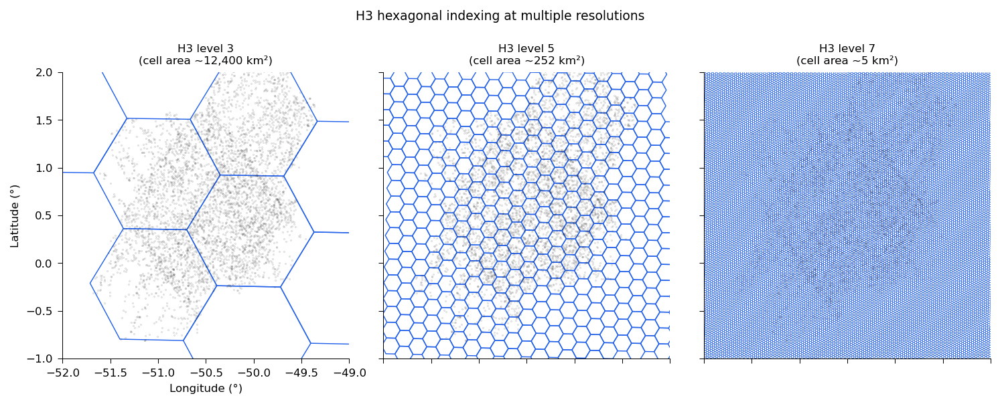
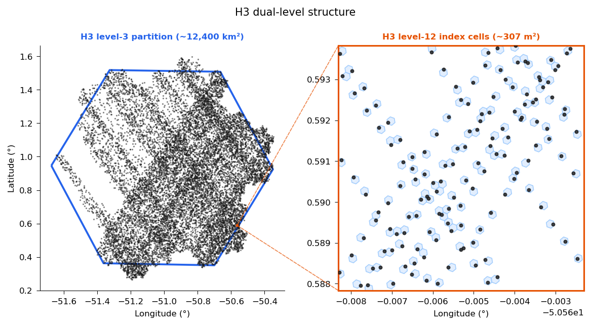
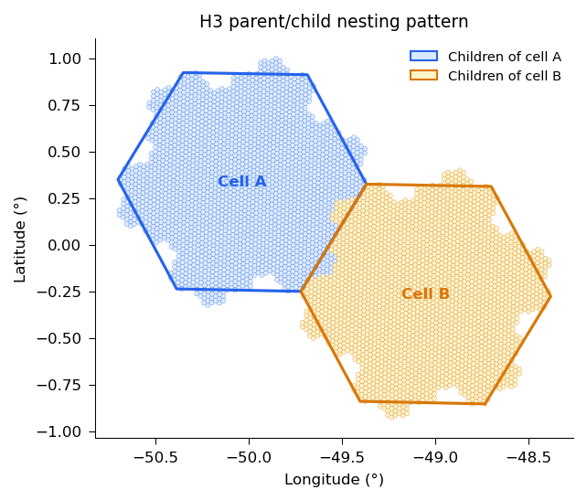

H3 Hexagonal Indexing#
What is H3?#
H3 is a hierarchical geospatial indexing system developed by Uber. It divides the Earth’s surface into a multi-resolution grid of hexagonal cells. Every point on Earth can be assigned to a unique H3 cell at any of 16 resolution levels (0–15), ranging from continental scale (~4.25 million km²) down to sub-meter scale (~0.90 m²).
H3 is the primary spatial index in gedih3 and serves as the backbone of the H3 database.
Why Hexagons?#
Hexagons have several geometric properties that make them well-suited for spatial indexing of point data like GEDI footprints:
Equal area (approximately): All hexagons at a given resolution level have nearly the same area, avoiding the distortion that affects square-pixel grids (where cells near poles are very different in area from cells near the equator).
Uniform adjacency: Every hexagon has exactly 6 neighbors at equal distance, eliminating the diagonal-vs-cardinal asymmetry of square grids.
Compact shape: Hexagons minimize the ratio of perimeter to area, reducing edge effects in spatial analyses.
Hierarchical nesting: Each cell has a well-defined parent at the next coarser resolution level, enabling multi-resolution aggregation.

The same GEDI shots indexed by H3 hexagons at three resolution levels. Level 3 (~12,400 km²) defines partition tiles for disk layout; level 6 (~36 km²) suits regional analysis; level 9 (~0.1 km²) is suited for exploring fine scale spatial gradients.#
H3 Resolution Levels#
Level |
Avg. Area |
Edge Length |
Typical Use |
|---|---|---|---|
0 |
~4,250,547 km² |
~1,107 km |
Continental |
1 |
~607,221 km² |
~418 km |
Sub-continental |
2 |
~86,745 km² |
~158 km |
Large country |
3 |
~12,393 km² |
~59 km |
Database partition (default) |
4 |
~1,770 km² |
~22 km |
Regional |
5 |
~253 km² |
~8.5 km |
Landscape |
6 |
~36 km² |
~3.2 km |
Regional aggregation |
7 |
~5.2 km² |
~1.2 km |
Fine regional |
8 |
~0.74 km² |
~0.46 km |
Local |
9 |
~0.105 km² |
~0.17 km |
Local analysis |
10 |
~0.015 km² |
~65 m |
Fine local |
11 |
~2,149 m² |
~25 m |
GEDI footprint scale |
12 |
~307 m² |
~9.4 m |
Database index (default) |
13 |
~44 m² |
~3.5 m |
Very fine |
14 |
~6.3 m² |
~1.3 m |
Ultra fine |
15 |
~0.90 m² |
~0.5 m |
Maximum resolution |
How gedih3 Uses H3: The Dual-Level System#
gedih3 uses H3 at two different resolution levels simultaneously:
Index level (default: level 12, ~307 m²) The fine H3 level assigned to each individual GEDI shot. At level 12, each hexagon is roughly the size of a GEDI footprint, so a shot’s coordinates are intersected at this scale to determine its cell. All coarser groupings are derived from this index via H3’s parent hierarchy
Partition level (default: level 3, ~12,000 km²) The coarse H3 level used to organize files on disk. Because every level-12 cell has a unique level-3 ancestor, shots are grouped into partitions by that ancestor — no separate spatial lookup needed. A spatial query then only reads the partitions whose cells overlap the area of interest, skipping everything else. For a country-sized query against a global database, this typically means 95%+ of partitions are never opened.

The H3 dual-level structure used by gedih3. Left: a level-3 partition tile (~12,400 km²) containing thousands of GEDI shots. Right: zoomed view of the orange rectangle, showing individual H3 level-12 index cells (~307 m² each) with the GEDI shots they contain.#
# Customize index and partition levels at build time
gh3_build -r "-51,0,-50,1" -h3r 12 -h3p 3 # defaults
gh3_build -r "-51,0,-50,1" -h3r 11 -h3p 4 # coarser index, finer partitions
The Parent/Child Nesting Caveat#
H3 is a hierarchical system, but hexagonal grids cannot be perfectly nested across resolution levels due to the geometry of tiling a sphere with hexagons. H3 parent hexagons are not perfectly geometrically inclusive of their children.
What this means in practice: hexagons do not cleanly subdivide into seven finer hexagons at each resolution step — the aperture-7 subdivision is an approximation. While logical containment in the H3 index is exact, geographic containment is approximate. Near hexagon boundaries, a small fraction of child cells may sit outside the geometric boundary of their logical parent, forming a fractal Gosper Island shape rather than a perfect hexagon fill.

H3 parent/child nesting caveat. Level-7 hierarchical children of two adjacent level-3 cells. Children form a Gosper Island shape that does not perfectly fill the parent hexagon — a known property of H3’s hierarchical approximation.#
How gedih3 handles this: gh3_aggregate groups shots by their computed H3 parent cell (using h3.cell_to_parent()), which is consistent and fast. The assignment is deterministic and matches what H3 users expect — it is simply not a perfect geometric containment, which is a known property of H3 that users should be aware of when comparing cross-resolution results.
For the vast majority of analyses, this has negligible effect. It becomes relevant only if you are studying phenomena at or near H3 cell boundaries, or if you need exact geometric containment (in which case EGI square pixels may be more appropriate — see EGI Indexing).
Selecting partition files: don’t intersect the cell polygons yourself#
The same caveat has a sharp edge for anyone reading the H3 database directly (i.e. opening partition parquet files without going through gh3_load). Because a shot is filed under cell_to_parent(latlng_to_cell(lon, lat, index_level), partition_level), a boundary shot can be physically located outside the polygon of the level-3 partition it is stored in — by up to ~0.18 × the partition’s edge length (~11 km at level 3). A shot’s true location and its storage partition can therefore disagree right at partition boundaries.
The practical consequence: selecting partitions by an exact polygon intersection silently drops boundary shots. In production we measured a single level-3 partition where ~5% of its 1.84M shots were stored under a cell whose polygon did not intersect their true location. Code that picks files like this —
# WRONG — silently misses ~boundary shots
cells = h3.h3shape_to_cells(h3.geo_to_h3shape(roi), 3)
files = [f for c in cells for f in glob.glob(f'{db}/h3_03={c}/year=*/*.parquet')]
— will under-read at every region edge. gh3_load avoids this internally by expanding the polygon-intersecting cells with their ring-1 grid neighbors (the overhang is far smaller than one cell width, so an immediate neighbor is always sufficient).
Use the provided selection helper instead — it applies the ring-1 expansion for you and returns the correct minimal set of partition cell IDs:
import gedih3
# Overhang-safe: ring-1 expansion applied, no boundary shots lost
ids = gedih3.gh3_select_partitions(source='/data/h3db', region=roi)
import glob
files = [f for i in ids
for f in glob.glob(f'/data/h3db/h3_03={i}/year=*/*.parquet')]
If you prefer to filter on bounding boxes, each partition’s *.metadata.json sidecar (and the parquet GeoParquet footer) carries an overhang-padded bbox that is safe to intersect against — while its h3_geometry is the exact cell polygon and is not. You can also compute the padded extent for any cell ID with gedih3.h3_partition_bbox(cell_id, partition_level). See Data Formats.
H3 Aggregation in gedih3#
import gedih3.gh3driver as gh3
# Load shots from the H3 database
ddf = gh3.gh3_load(source='~/gedi_data/h3/', columns=['agbd_l4a'])
# Aggregate from level 12 (shot level) to level 6 (~36 km²)
# Each Dask partition is processed independently — no shuffle needed
agg = gh3.gh3_aggregate(ddf, target_res=6, agg='mean')
agg.compute()
See Python API for custom aggregation functions.